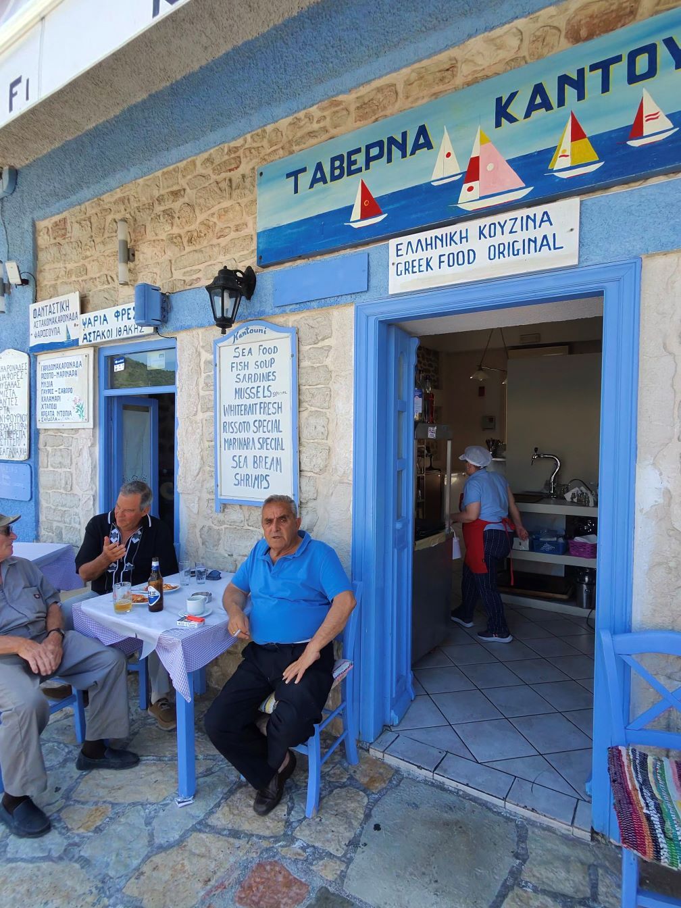
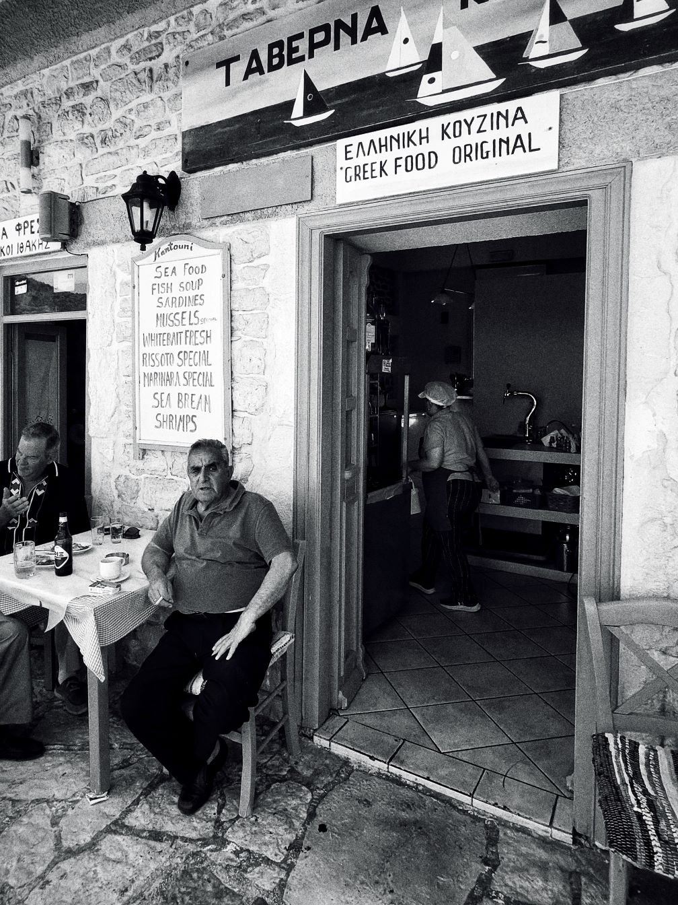
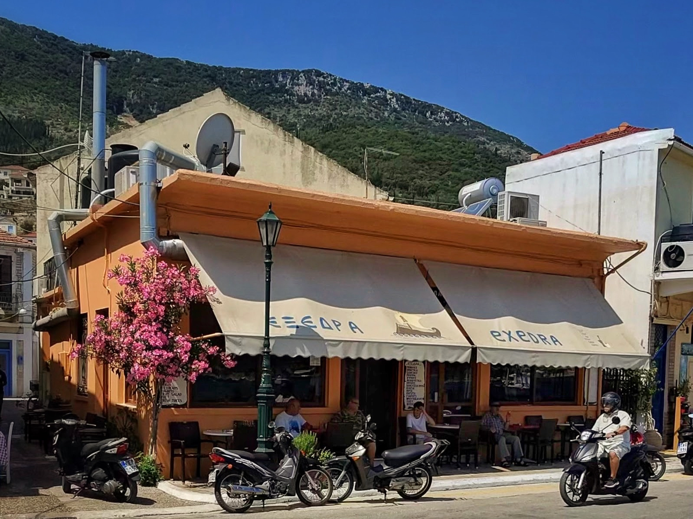
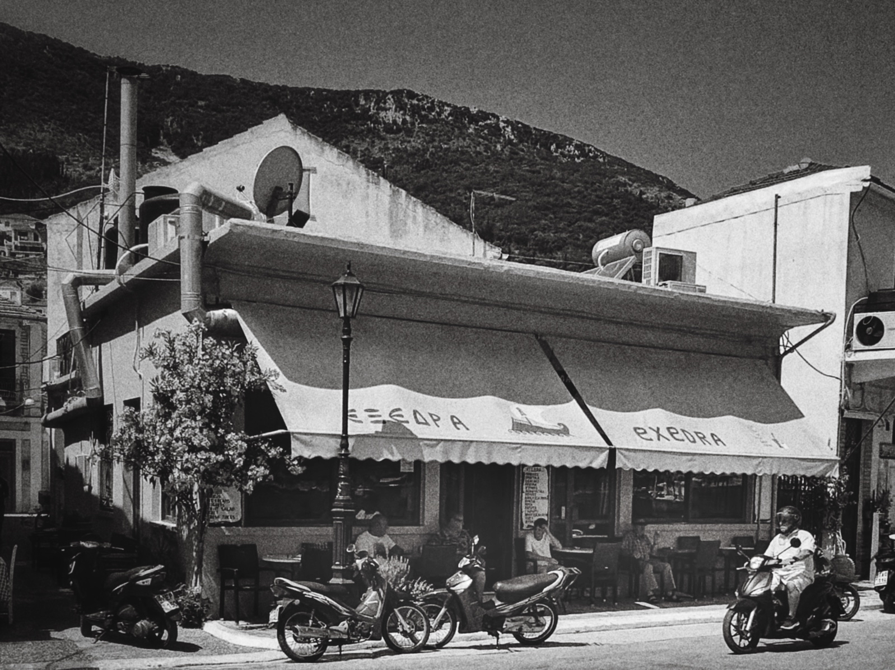
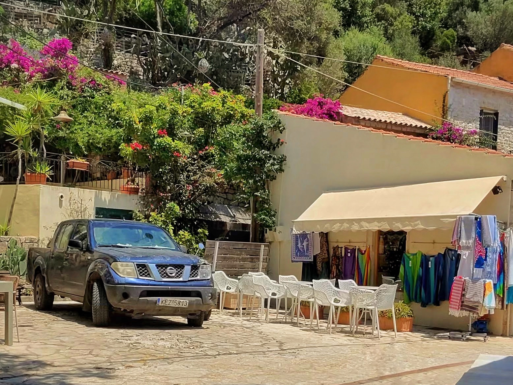
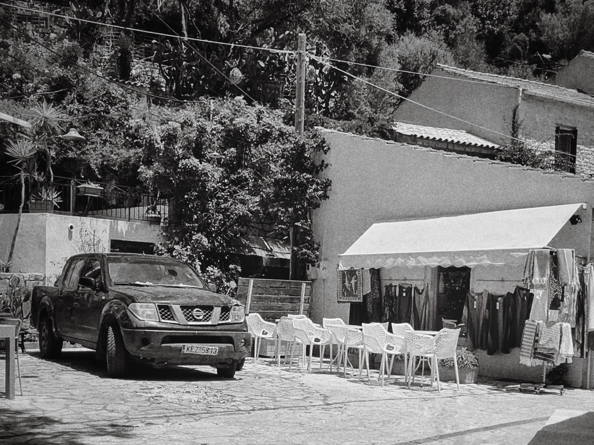
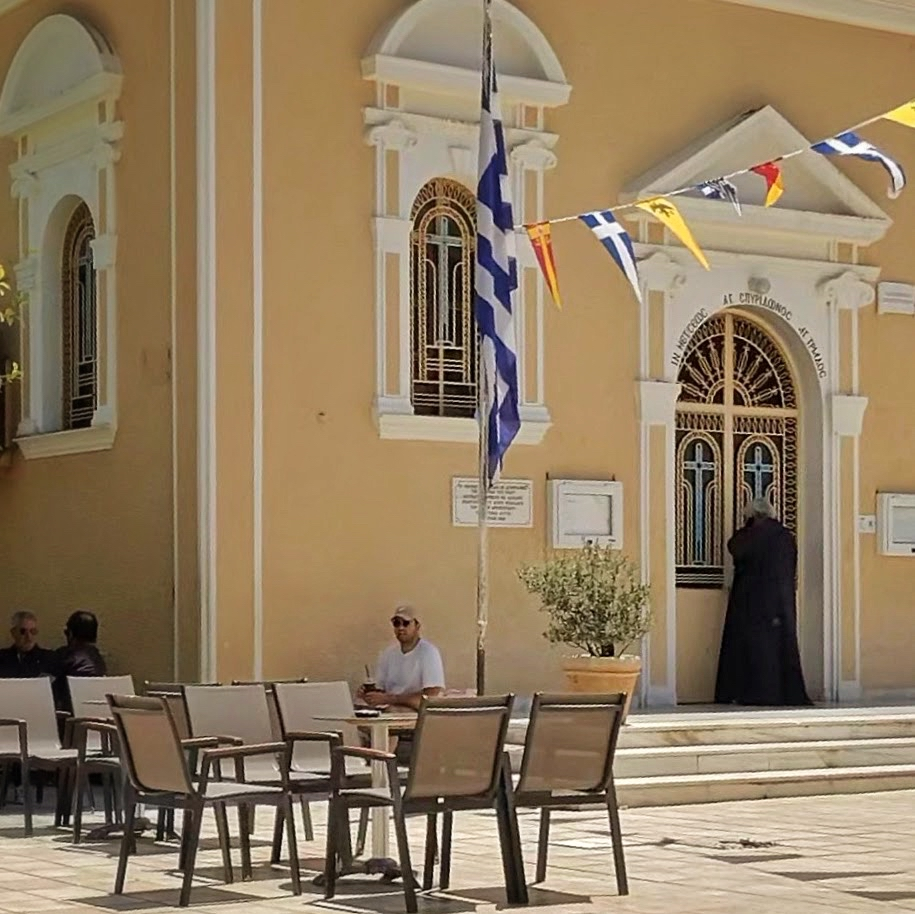
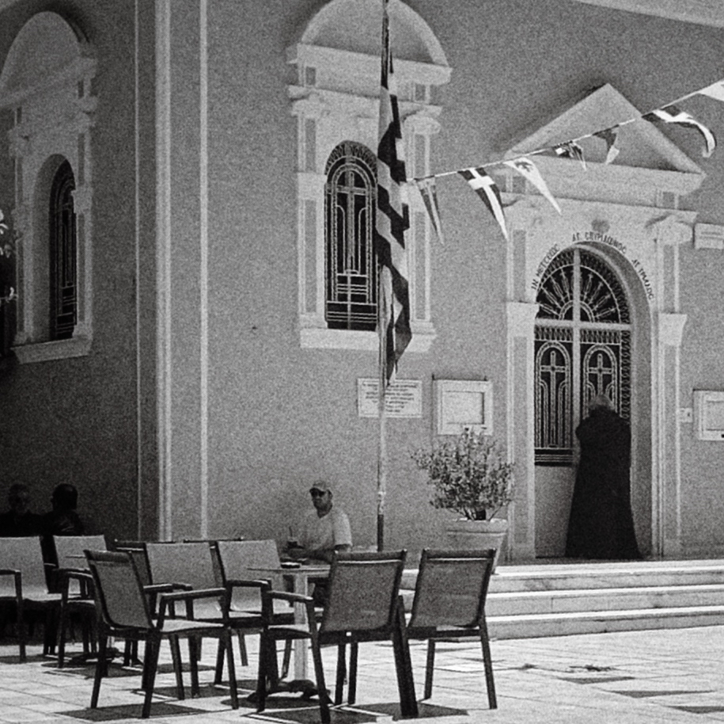
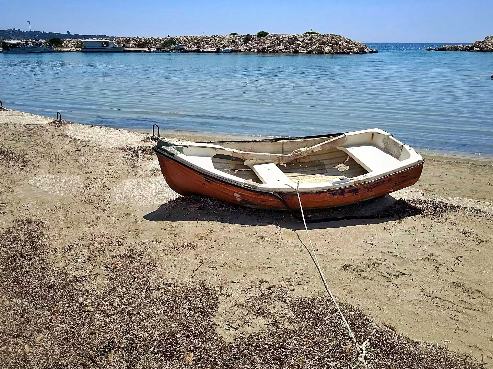
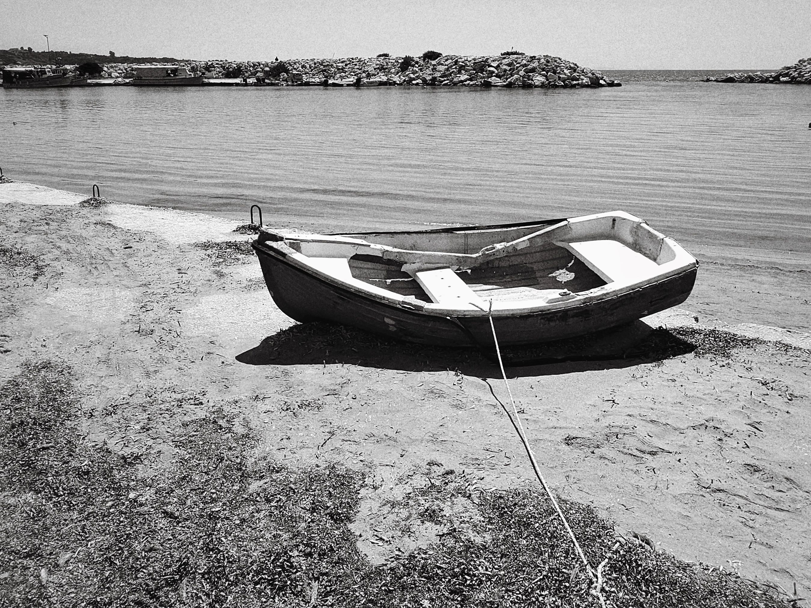

Kefalonian Conversations
In this series, I paired each colourful Kefalonian moment with its black and white counterpart. These side-by-side images invite the viewer to slow down, notice the contrasts, and reflect on how different moods, memories, or stories emerge through light and tone. A quiet visual dialogue between colour and monochrome, modern life and timeless setting. Or at least that's what ChatGPT said, I just went along with it as a fun project, seemed pretty arty and was my first attempt at street scenes taking photos of strangers. As you can see in the first set, even with Rayban Meta glasses I still got caught by the old guy taking his picture. He was very nice about it though, thankfully.

Stuart Leach
June 28, 2025 · 2 min read


Timeless conversations and cold beers under a Kefalonian sky


Morning stillness outside Exedra Taverna


Sunlight and shade in a hidden square


Waiting outside the church


Beached boat facing the Ionian blue